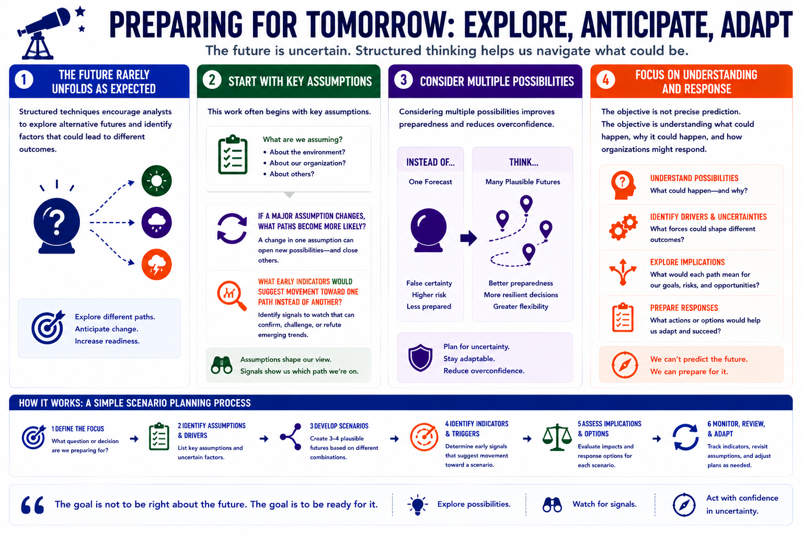

Structured Analytic Techniques
Key Assumptions and Alternative Futures
Connecting to LMS... Progress: in progress
Version 1.0 | Date: 2026-06-16 | Educational overview of structured analytic techniques for judgment under uncertainty.

Narration
The future rarely unfolds exactly as expected. Structured techniques encourage analysts to explore alternative futures and identify factors that could lead to different outcomes.
This work often begins with key assumptions. If a major assumption changes, what paths become more likely? What early indicators would suggest movement toward one path instead of another?
Considering multiple possibilities improves preparedness and reduces overconfidence. It helps teams plan for uncertainty instead of treating one forecast as the only plausible outcome.
The objective is not precise prediction. The objective is understanding what could happen, why it could happen, and how organizations might respond.